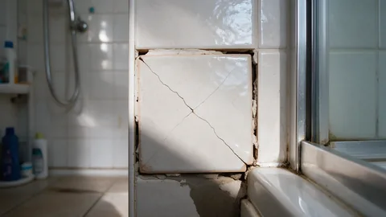

Generated photo
Generated photoGenerated for this demo. Not a photograph of a real job.
What grout is, and what it is not
Grout is a filler. Its job is to take up the difference between one tile and the next, keep dirt out of the gap and stop the edges chipping. That is the whole brief.
What it is not, and never was, is a waterproof layer. Grout is porous. Water goes into it, and in a shower it goes into it several times a day. On a properly built wall that does not matter at all, because the waterproofing is behind the tile where it belongs and the grout is just the front of the sandwich. The drawing below is what a joint actually looks like in section, which explains most of what follows.
Nine times out of ten it is surface mould
Warm, wet, poorly ventilated, slightly soapy: a bathroom gives mould everything it wants, and the porous grout line is the easiest thing in the room for it to get a hold on. It is growing on the grout, not coming through it.
You can tell because it cleans off and stays off for a while. Anything from a stiff brush and a proper bathroom cleaner upwards will shift it. Test any cleaner in a corner first, especially on natural stone or coloured grout, because some of the strong ones will bleach grout unevenly and some will etch stone.
And then deal with why it is there, or it will be back by spring. Run the extractor during the shower and for a good while afterwards rather than switching it off with the light. Open the window. Wipe the walls down with a squeegee if you are the sort of person who will actually do it. Keep the door shut while the room dries out so the damp air does not go round the rest of the house. None of that is exciting and all of it works better than any product.
The tenth time it is telling you something
These are the signs that it is not surface mould and that water is getting past the tile:
It comes straight back in exactly the same spot within days of cleaning, while the rest of the room stays fine. It runs in a straight line along one internal corner, which usually means that corner was grouted instead of sealed and has cracked. The grout there is soft or crumbly rather than hard. There is a tile nearby that sounds hollow when you tap it. The wall feels damp or cool in that patch. Or there is a mark on the ceiling in the room below, which settles the argument.
What is happening in that case is that water is going through a crack or an open joint, sitting in a void behind the tile where it cannot dry out, and the black you can see at the front is the only visible end of something that is mostly hidden.
Why internal corners go first
Nearly every one of these we get called to is an internal corner, and nearly every time the corner was grouted. Grout is hard and does not stretch. A corner between two walls moves a fraction with the seasons, and the joint along a bath or a tray moves every single time somebody gets in it.
So the grout in that corner cracks, often within the first year. Then it is not a joint any more, it is an open route into the wall. Every internal corner and every junction with a bath, a tray or a worktop should have a flexible sealant bead in it instead. There is a drawing of the difference below.
Can it be cleaned, or does it need doing again?
If it cleans off and stays off, clean it and sort the ventilation out. If it keeps coming back everywhere, the grout has probably worn hollow and is holding dirt, and a regrout will fix it for a day or two's work. If it keeps coming back in one specific spot, stop cleaning it and get somebody to look behind the tile instead, because you are treating the symptom.
What not to do
Do not grout over the top of existing grout. A thin skim on top of old grout has nothing to grip and it will craze and flake within months. If it is being redone, it gets raked right out first.
Do not run new sealant over old sealant. Mould grows on the back of the old bead, and the new one just seals it in where you cannot clean it. Cut the lot out, clean the joint, let it dry properly, then one clean pass.
Do not reach for bleach as a routine. It lightens the stain without killing much that matters below the surface, it will take the colour out of coloured grout unevenly, and used often it is unpleasant to be in a small room with. A proper mould cleaner and an open window will do more.
Written for this demo from general trade knowledge. It is not advice on your property, and anything structural, anything wet and anything to do with electrics or a leak wants somebody looking at the actual house.
In section
What a grout joint actually is.
Two tiles from the side with the joint between them, drawn far wider than life so the detail shows.
The internal corner
Why that one goes first.
The same corner from above, grouted and sealed. One of them moves with the house and one of them does not.
Grout in the internal corner
Grout is hard and it does not stretch. Two walls meeting in a corner move a fraction against each other with the seasons, and a bath or a tray moves every time somebody gets in it. So the grout splits along the corner, usually within a year, and then it is an open crack straight into the wall rather than a joint.
Flexible sealant in the internal corner
Every internal corner, every junction with a bath, a tray or a worktop, and anywhere tile meets a different material. A flexible bead takes the movement and stays closed. It is not a worse finish than grout, it is the right material for a joint that moves, and it is the single most common thing we find done wrong on a bathroom somebody else tiled.
Also worth reading
The other two.

Generated photoTiling over tiles: when it is fine and when it is not
Three checks that take ten minutes and tell you whether the old tile can stay. And the thing nobody mentions, which is what the extra thickness does to your door.
 Generated photo
Generated photoLarge format tiles: what to know first
Fewer joints, more preparation. Why the quote for a one metre tile is not the same as the quote for a small one, and what you are actually paying for.
Want somebody to look at the actual wall?
Tell us the room and your postcode. A straightedge and a knuckle tell us more in twenty minutes than a page of guidance.